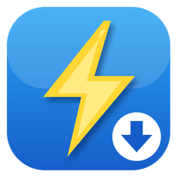

Connect Barq to your PC
Open this page on your Android phone, then tap the button. Barq connects to Barq for Windows on the PC.
Open in Barq Get Barq for Android The pairing code stays on your phone: it is after "#" in the address, so it is never sent to this website.